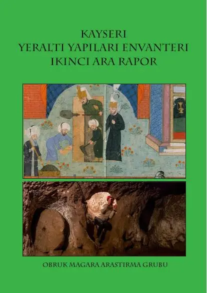
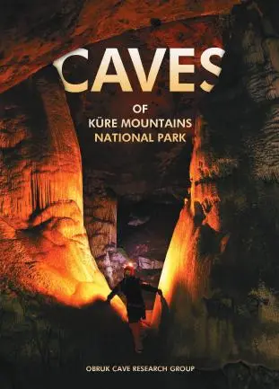
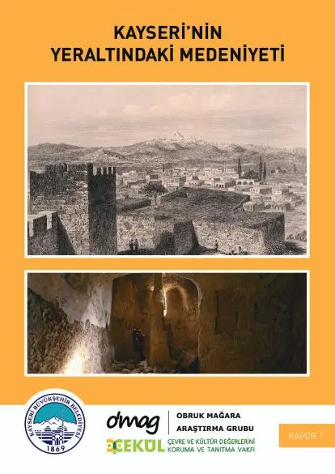
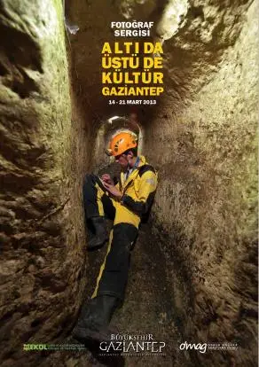
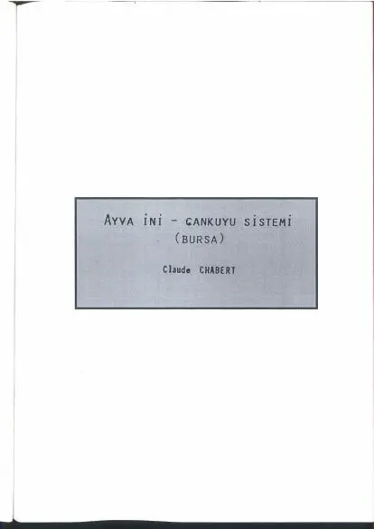
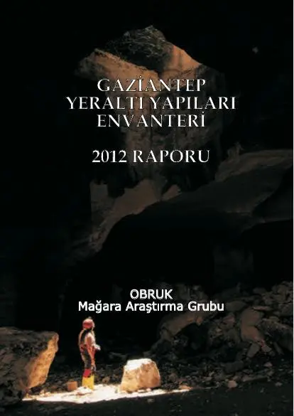
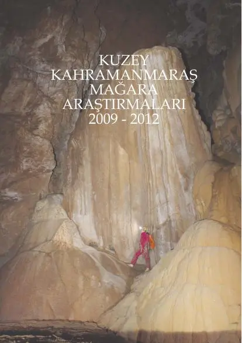
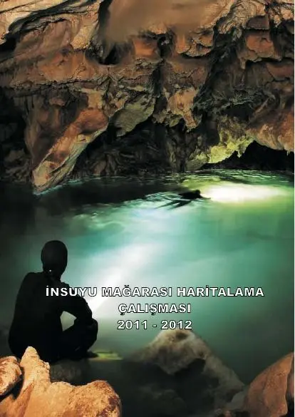

OBRUK
Reports
Our project reports with survey results and maps. All are free to download.

Kayseri 7th Interim Report
PDF · 13,4 MB
Kayseri 6th Interim Report
PDF · 18,8 MB
Rock-cut Settlements of the Euphrates
PDF · 5,5 MB
Kayseri 5th Interim Report – Koramaz Valley
PDF · 14,2 MB
Kayseri 4th Interim Report
PDF · 21,0 MB
Kayseri 3rd Interim Report
PDF · 11,0 MB
Kayseri 2nd Interim Report
PDF · 8,0 MB
Caves of Küre Mountain
PDF · 9,1 MB
Kayseri 1st Interim Report
PDF · 5,5 MB
"Culture Above and Below – Gaziantep" Photo Exhibition
PDF · 1,3 MB
Ayvaini Cave Map Atlas
PDF · 4,7 MB
Gaziantep 2012 – Underground Structures Report
PDF · 3,3 MB
Kahramanmaraş Region Report
PDF · 3,4 MB
Insuyu Cave Report
PDF · 1,1 MBWhen citing, please credit: OBRUK Cave Research Group, report title, year.